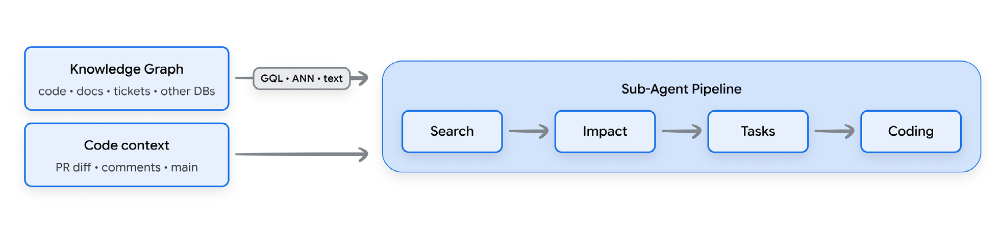

فهرست مطالب
«کدنویسی شهودی (Vibe coding)» بهمعنای «شهودی در تولید» نیست.
مقدمه
روال روزانهٔ یک مهندس نرمافزار در یک سال گذشته یک چرخش کامل صدوهشتاد درجهای رو به جلو داشته است. در اوایل ۲۰۲۴ و پیش از آن، زمان چشمگیری صرف کندوکاو در رابطها و مستندات توسعهدهنده میشد، آزمودن دستی کد خطبهخط، و تعیین اینکه فلان زبان از کدام تابع برای بررسی زیررشته استفاده میکند. وقتی کد تمام میشد، تلاش قابلتوجهی صرف دیباگ (debug) و رفع ناهمخوانیهای میان کد کارکردی و قصد (intent) اولیه میشد.
امروز توسعه با سرعت سرسامآور پیش میرود. تیمها اکنون از عاملهای کدنویسی استفاده میکنند که فقط متن پیشنهاد نمیدهند، بلکه واقعاً ابزار (tool) به کار میگیرند و کارها را اجرا میکنند. یک ویرایشگر کدنویسی هوشمند میتواند بهسرعت هزار خط کد خوبمستندشده بیرون بدهد. حس میکنید لشکری از کارآموز استخدام شده که هرگز نمیخوابند و هرگز شکایت نمیکنند.
با این حال، چون پیادهسازی دیگر گلوگاه اصلی نیست، میتوان هوش مصنوعی را برای نوشتن پوشش (coverage) تستی جامعتر از آنچه هر انسانی در همان بازهٔ زمانی میتوانست بنویسد به کار گرفت. این راهی نیرومند و برنامهپذیر برای افزایش اطمینان به کد است که بعداً بهتفصیل بحث خواهد شد. افزون بر این، توان هوش مصنوعی بسیار فراتر از پیادهسازی میرود: در طراحی سامانه، نوشتن مشخصات، برنامهریزی نقشهٔ راه و تحلیل نتایج عالی است. هرچند گلوگاه به پاییندست و به انسانهایی منتقل شده که باید این کار را یکپارچه و بازبینی کنند، ابزارهای ادارهاش در دسترساند.
«کدنویسی شهودی» به استفاده از هوش مصنوعی برای تولید سریع کد بر پایهٔ یک «حسوحال» یا قصد سطحبالا اشاره دارد، نه کدنویسی دستی و سختگیرانه. اما روشنکردن این نکته حیاتی است که «کدنویسی شهودی» بهمعنای «شهودی در تولید» نیست. در حالی که ما عاملهای هوش مصنوعی را با تمام توانشان به کار میگیریم، همهچیز کاملاً قصدشده و کنترلشده است تا اتکاپذیری در سطح تولید تضمین شود، نه اینکه به خروجی اعتبارسنجینشدهٔ هوش مصنوعی تکیه کنیم.
در محیط سازمانی، این «حسوحال» را توسعه با هوش مصنوعی عاملمحور مینامیم. برخلاف هوش مصنوعی مولد استاندارد که مانند تکمیل خودکار هوشمند عمل میکند، هوش مصنوعی عاملمحور مانند عضوی ترکیبی از تیم عمل میکند: از مدل زبانی برای تولید استفاده میکند (مغز)، و از ابزارها برای یکپارچهشدن در گردشکار (workflow) (دستها). میتواند استدلال کند، مشخصات (spec) یا پروندههای تست (test) بنویسد، از مرورگر برای آزمودن رابط کاربری استفاده کند، و کد را در سامانهٔ کنترل نسخه ثبت و ادغام کند. اما همانطور که توسعه از آزمایش فردی به تولید تیمی در مقیاس میرود، آشکار میشود که نوشتن هزار خط کد پیش از ناهار، همان انتشار نرمافزار نیست.
وقتی عامل «توهم» میکند — که در زبان هوش مصنوعی یعنی مدل با اطمینان چیزی از خود میسازد که درست نیست — فقط یک اشکال نمیسازد؛ میتواند هزار خط منطق «همحس» اما از نظر کارکردی شکسته تولید کند. اگر بازبینان انسانی در دریایی از پولریکوئستهای (pull request) تولیدشدهٔ هوش مصنوعی غرق شوند — همان درخواستهای دیجیتالی که از همتیمیها میخواهند پیش از انتشار به کار نگاه کنند — سرعت نوشتن بیربط میشود. فرایند واقعاً سریعتر نشده؛ صرفاً انبوه بزرگتری از «چیزها» برای مرتبکردن بعدی ساخته است.
خوشبختانه راههایی برای محافظت از فرایند توسعه وجود دارد، اما مهم است که این تکنیکها را از همان ابتدا به کار ببرید، نه وقتی نیمی از راه را رفتهاید. این مقاله مجموعهای از تکنیکها را دربر دارد، از توسعهٔ کد برای تولید، تا امنکردن کد و تغییر فرهنگ تیم در عصر کدنویسی شهودی.
توسعهٔ مبتنی بر مشخصات
در دنیای سنتی مهندسی نرمافزار، به توسعهدهندگان آموخته شده بود که «کد-اول» باشند. ایدهای مبهم به بازکردن ویرایشگر و تایپکردن میانجامید تا چیزی کار کند. اما در عصر هوش مصنوعی عاملمحور، فعالیتهای روزانه بهشدت جابهجا شدهاند. بیشتر وقت اکنون صرف نوشتن مشخصات باکیفیت میشود: دستورهای فنی دقیقی که به هوش مصنوعی میگویند دقیقاً چه بسازد.
در این گردشکار تازه، نقش توسعهدهنده بیشتر یک معمار فنی است تا کدنویسی سنتی. و این بخش حیاتی ماجراست: کد اکنون دورریختنی است. اگر مشخصاتی محکم نوشته شود، کل کدپایه میتواند بارها و بارها بازتولید شود. حتی میتوان به عاملی دستور (instruction) داد کل پروژه را در یک بعدازظهر از یک زبان به زبان دیگر برگرداند. چون کد دورریختنی (Disposable code) است، همان دلبستگی عاطفی به آن وجود ندارد. چون دوازده ساعت صرف دیباگ یک نقطهویرگول نشده است، ترسی از دورانداختن و شروع دوباره در صورت تغییر نیازمندیها وجود ندارد.
یک مشخصات خوب
پس نقشهٔ سطح تولید چه شکلی است؟ یک مشخصات خوب، ستارهٔ شمالی معماری (Architectural North Star) است.
از «پارهپارهشدن زمینه (Context fragmentation)» جلوگیری میکند: معادل دیجیتالی بازی «تلفن»، جایی که هوش مصنوعی شروع به
گمکردن رشتهٔ ماجرا میکند چون دارد به عکسهای قدیمی فایلها نگاه میکند. میتوان از هوش مصنوعی برای
پالایش یک مشخصات خوب استفاده کرد، عملاً بهعنوان همنویسنده یا ویراستار و بازبین مشخصات.
معمولاً مشخصات درون کدپایه ذخیره میشود، برای نمونه بهشکل فایلی مارکداون یا
YAML در پوشهٔ specs/. این فایل بهعنوان
منبع حقیقت برای هم انسانها و هم هوش مصنوعی عمل میکند.
کدام قالب را به کار ببریم؟
پژوهشی در ۲۰۲۶ آشکار کرد که عاملهای مدلزبانی به نحوهٔ قالببندی دستورها حساسیت شدیدی نشان میدهند و استفاده از فایلهای مارکداون عمومی و بهینهنشده میتواند تا ۴۰ درصد افت عملکرد بسازد. برای رفع این، پژوهشگران کامپایلر مهارتی فوقسریع ساختند که بهطور خودکار یک فایل دستور تکمنبعی را در کمتر از ۱۰ میلیثانیه به قالب بهینهٔ هدفِ هر مدل کامپایل میکند.
برای تیمهایی که از خانوادهٔ مدلهای جِمنای استفاده میکنند، آن پژوهش نشان میدهد بهترین راهبرد مطلق قالببندی، رویکردی ترکیبی از مارکداون و YAML شرطی است. مدل از سرتیترهای تمیز مارکداون برای لنگرانداختن توجهش استفاده میکند، اما عملکرد وقتی به اوج میرسد که برای هر پیکربندی ساختارمند یا اسکیمای دادهای با عمق تودرتویی بیش از سه به YAML سوئیچ شود.
| قالب | دقت تجزیه (decomposition) برای پیکربندیهای عمیقاً تودرتو |
|---|---|
| YAML | ۵۱٫۹٪ |
| JSON | ۴۳٫۱٪ |
| XML | ۳۳٫۸٪ |
با رندرکردن مشخصات عمیقاً تودرتو در YAML و نگهداشتن دستورهای روایی در مارکداون، توسعهدهندگان «مالیات قالب (Format tax)» استدلالی را که با ورودیهای سنگین همراه است دور میزنند و تضمین میکنند مدل با بیشترین دقت و بهترین اقتصاد توکن (token) کار کند.
رفتارمحور
مشخصات توسعهٔ رفتارمحور (BDD)، ابزار نهایی تبدیل ایدههای مبهم و دوپهلوی انسانی به طراحی معماری دقیقی است که عامل هوش مصنوعی بتواند بدون حدسزدن بسازدش. در هستهاش، این روشی از توسعهٔ نرمافزار است که با زبان طبیعیِ ساده و ساختارمند توصیف میکند سامانه دقیقاً چگونه باید از دید کاربر رفتار کند، پیش از آنکه هیچ کدی واقعاً نوشته شود.
این مشخصات از نحوی استانداردشده به نام گرکین استفاده میکند. گرکین بر قالبی ساده و اعلانی تکیه دارد: سناریو / با فرض / وقتی / آنگاه. این قالب مدل را وادار میکند بهصورت موقعیت ← کنش ← نتیجه فکر کند، که کدنویسی شهودی را کاملاً حذف میکند و عامل را روی ریلی سختگیرانه نگه میدارد.
مشخصاتی خوب برای تولید پروژهای تازه شامل اینهاست:
- طراحی فنی کامل: فقط نگویید «یک صفحهٔ ورود بساز». آن را به اجزا بشکنید. به نیازمندیها، اسکیماهای پایگاه داده (ساختار دادههایتان) و مشخصات رابطها (قراردادهایی که اجازه میدهند بخشهای مختلف نرمافزار با هم حرف بزنند) بپردازید.
- کمکهای بصری: نمودارها و فهرستی از ابزارها و کتابخانههای مشخص، همراه با شمارههای نسخه.
- اطلاعات زمینهای: «چرا» را پشت «چه» به عامل بدهید؛ این کمک میکند رو به جلو فکر کند و گامهایی را که احتمالاً لازم خواهید داشت هم بداند.
- سناریوها: خوب چه شکلی است، چه چیزی اشتباه است، و حالتهای مرزی را هم بگنجانید.
specs/ فضای کاریام میگذارم.
مدلهای زبانی بزرگ ساختارهای داده را تفسیر نمیکنند. آنها متنِ نشانهگذاریشده را پردازش میکنند. هر نویسهای که میفرستید به نشانهها شکسته میشود، و هر نشانه بودجه، زمان و ظرفیت زمینه (context) مصرف میکند. در نهایت، نوشتن پیشنویس مشخصاتی در سطح تولید یعنی با نشانهگذاری مانند یک قید (constraint) فیزیکی سخت رفتار کردن، چون هر نویسه، هر خط تازه و هر فاصلهٔ تورفتگی که میفرستید مستقیماً به بودجهٔ توسعه و تأخیر (latency) سامانهتان ترجمه میشود.
هرچند سکوهای عاملی کانتکست ویندوهأ فوقالعاده سخاوتمندانهای میدهند، همچنان بنیاداً به فیزیک نشانهگذاری
مدلهای زیرینشان مقیدند. هر فاصلهٔ غیرضروری در بلوکی عمیقاً تودرتو، و هر دستور تکراری،
چرخههای پردازش و ظرفیت سرهای توجه را در همان حلقههای (loop) استدلال چندنوبتی میبلعد که عامل در آنها
بهشکل تکرارشونده برنامهٔ شما را میسازد، میآزماید و ویرایش میکند. با رفتار با پوشهٔ specs/
نه بهعنوان مستندات، بلکه بهعنوان مجموعهدستوری کمچرب و کامپایلشده که مارکداون
خوانا برای انسان را با بلوکهای هدفمند و تختِ YAML متوازن میکند،
مالیات قالب استدلالی را حذف میکنید و عامل هوش مصنوعیتان را روی ریلهای سختگیرانه و
مقرونبهصرفه نگه میدارید.
دستورها کجا زندگی میکنند؟
برای عمل به توسعهٔ مبتنی بر مشخصات، لازم است بفهمیم ابزارهای کدنویسی چگونه دستورها را مصرف میکنند. دستورها در یک مکان واحد نوشته نمیشوند. ریختن یک سند طراحی سامانهٔ عظیم و صدصفحهای مستقیم در پنجرهٔ گفتوگو، بهسرعت بودجهٔ زمینهٔ کوتاهمدت را تمام میکند، تأخیر را بالا میبرد و زمینه را پارهپاره میکند. این مشخصات میتوانند در جاهای مختلفی زندگی کنند.
۱. رابط گفتوگو (کوتاهعمر، ویژهٔ نشست)
جعبهٔ ورودی گذرا و گفتوگویی در محیط توسعه، با نشست (session) فعال توسعهدهنده زندگی میکند. از رابط گفتوگو
صرفاً برای هماهنگی سطحبالا و حلقههای بازخورد فوری استفاده کنید. برای نمونه:
«طراحی موجود در specs/payment_retry.md را بازبینی کن و تستهای واحدِ شکستخوردهٔ
تعریفشده در سناریوی ۳ را تولید کن.»
۲. پوشهٔ مشخصات (ویژهٔ کار، ثبتشده در کنترل نسخه)
این پوشهای ایستاست که مستقیم در ریپو (repository) ثبت میشود. طراحی فنی، سناریوهای رفتارمحور، قراردادهای رابط و اسکیماهای ساختارمند YAML را ذخیره میکند. عامل این دایرکتوری را پویا (Static) نمایه میکند تا بدون چپاندن دستی درخواست، کد را بسازد و راستیآزمایی کند.
./my-app/specs/my_spec.md۳. مهارتهای عامل (قابلاستفادهٔ مجدد، متمرکز بر قابلیت و رفتار)
مهارتها (skill) فایلهای مارکداون ساختارمندیاند که گردشکارهای تخصصی و محرکدار را دربر دارند. هرچند مهارتها میتوانند هرجای ریپو زندگی کنند، باید در دایرکتوری تعیینشده ذخیره شوند تا مدیر فضای کاری بشناسدشان. آنها به عامل عادتهای مهندسی تکرارشونده میآموزند، مانند نگهداری خودکار فهرست تغییرات وقتی تغییری در کد تشخیص داده میشود.
./my-app/.agent/skills/docs-maintenance/SKILL.mdچنین پوشهٔ مهارتی میتواند داراییهای داده یا اسکریپتهایی هم برای استفادهٔ خودِ مهارت دربر داشته باشد.
۴. پرامپتهای سامانه (سراسری، متمرکز بر هویت)
اینجا جایی است که هوش مصنوعی دیانای مهندسی مشخص شما را میآموزد. ابزارهای عاملی فایلهای زمینه را سلسلهمراتبی پویش و به هم الحاق میکنند، یعنی دستورهای سفارشی از بازنویسیهای سراسری تا پیکربندیهای محلی پروژه لایهلایه میشوند.
- پروفایل سراسری: این فایل در دایرکتوری پیکربندی خانگی زندگی میکند. اینجا جایی است که هوش مصنوعی با ترجیحهای فردی همراستاتر میشود. شخصیتی جهانی، سبک پیشفرض و اصول هستهای را صرفنظر از پروژه تعریف میکند.
- پیکربندی مشترک چندابزاری: برای جلوگیری از پارهپارهشدن دستورها وقتی تیمی از چند کلاینت هوش مصنوعی استفاده میکند، اکوسیستم از فایل مشترکی پشتیبانی میکند که بهعنوان بنیان میانابزاری عمل میکند، در حالی که فایل محلی ویژهٔ یک ابزار همچنان بالاترین اولویت را برای تنظیمات همان ابزار حفظ میکند.
- مشخصات پروژه: این فایل در دایرکتوری ریشهٔ پروژه زندگی میکند. این، دیانای پروژه است. عامل خط فرمان بهطور خودکار این فایل را تشخیص میدهد و میخواند و قواعدش را در اولویت میگذارد.
پرامپتهای متفاوت برای کاربردهای متفاوت
فقط یک راه برای تبدیل مشخصات به کد وجود ندارد. این را میتوان به چند حالت اجرا شکست که هرکدام ذهنیت متفاوتی میخواهند.
۱. تولید پروژه (معمار)
در این حالت، ساخت اسکلت از صفر انجام میشود: ساختن استخوانبندی پروژه. بدون حالت بیمحابا (YOLO mode): باید صریحاً به عامل گفته شود فوری کد نزند. ابتدا باید ساختار پوشهها و پشتهٔ فناوری را برای تأیید پیشنهاد دهد. اطمینان حاصل کنید که درخواست شامل تولید تستها، مستندات و گزارشبرداری باشد (همان «جعبهٔ سیاه» دیجیتالی که ثبت میکند برنامه چه میکند).
برای هر کتابخانه شمارهٔ نسخه بگنجانید. بدون آنها، عامل ممکن است نسخهٔ قدیمیتری از ابزاری پیشنهاد دهد، چون «تاریخ پایان دانشش» — تاریخی که دادهٔ آموزشیاش تمام شده — در گذشته بوده است.
۲. تولید قابلیت (سازنده)
در این حالت، قابلیتها روی کدپایهٔ موجود پیاده میشوند. از عامل بخواهید سبک موجود را رعایت کند، شامل الگوهای نامگذاری و شیوهٔ مدیریت خطا در کد. وقتی چند فایل ویرایش میشود، تغییرها باید دستی تأیید شوند. مهم است که «تفاوت» — فهرستی که دقیقاً نشان میدهد چه خطهایی اضافه یا حذف میشوند — درون ویرایشگر دیده شود.
۳. رفع اشکال (متخصص جرمشناسی)
وقتی چیزها میشکنند، حالت جرمشناسی لازم است. هدف، تحلیل علت ریشهای و ترمیم جراحی است. از پرامپت (prompt) علامتمحور («دکمه کار نمیکند») به پرامپت شاهدمحور بروید («گزارشهایی که با فلان فرمان گرفته شدند خطای ۴۰۳ نشان میدهند»). از نسخهبندی در خط فرمان برای مقایسهٔ نسخههای کد استفاده کنید. سپس جریان را توضیح دهید: «درخواست به متعادلکنندهٔ بار میرسد ← لایهٔ احراز هویت (identity) سرایند را حذف میکند ← غلاف شکست میخورد.»
همیشه ابتدا درخواست یک تست واحدِ شکستخورده یا فرمانی برای بازتولید اشکال بدهید. این پروندهٔ تست را در کدپایه نگه دارید تا اطمینان حاصل شود اشکال برنمیگردد. قید سختی بگذارید که عامل فقط علت ریشهای را درست کند. کد بیربط نباید «تمیزکاری» شود، چون فرایند بازبینی را پیچیده میکند.
برای ارتقای تست سرتاسری و عیبیابی، برخی ابزارها مرورگری داخلی دارند که به عاملها توانایی میدهد خودگردان (autonomous) سرور محلی را اجرا کنند، با رابطهای کاربری زنده تعامل کنند، و اصلاحهای بصری را در زمان واقعی راستیآزمایی کنند. در پشت صحنه، نمونهای کاملاً خودکار از مرورگر بومی برای اجرا، ضبط و راستیآزمایی این کارهای سمتکاربر هماهنگ میشود. مهمتر اینکه برای جلوگیری از کنشهای غیرمجاز و محافظت از حریم خصوصی، این زیرعامل (subagent) درون نمایهٔ مرورگری کاملاً ایزوله و سندباکسمانند اجرا میشود. چون این نمایه ورودهای فعال مرورگر یا نشستهای شخصی فعال را نمیبیند و به آنها دسترسی ندارد (عملاً بهعنوان محیطی ناشناس و تمیز عمل میکند)، از نشت (leak) زمینه یا عملیات تصادفی روی حساب واقعی جلوگیری میکند، در حالی که به عامل اجازه میدهد تغییرهای تجربهٔ کاربری را سختگیرانه بیازماید بیآنکه امنیت به خطر بیفتد.
۴. نوشتن مستندات (نویسنده)
در توسعهٔ مبتنی بر مشخصات، مستندات منبع حقیقت است. اگر مستندات و کد همگام نباشند، هوش مصنوعی شروع به توهم میکند. در «مهارتهای» عامل مشخص کنید که دستورهای موجود در فایل راهنما یا فهرست تغییرات همیشه باید نگهداری شوند. از قالبهای استاندارد مستندسازی درونکد برای زبان برنامهنویسی خودتان استفاده کنید. اینها روشهای ساختارمند نوشتن توضیحاتاند که به هوش مصنوعی (و انسانها) کمک میکنند دقیقاً بفهمند یک تابع چه میکند، بدون خواندن هر خط منطق.
۵. مهندسی داده (کتابدار)
هنگام پرسوجوی جدولها یا جابهجایی فایلها، نقش شما نقش مهندس داده است. از افزونههای ویرایشگر برای دسترسی مستقیم به دادهٔ ابری از درون ویرایشگر استفاده کنید. از عامل بخواهید همیشه پرسوجو یا فرمان مشخصی را که برای تولید خروجی به کار برده نشان دهد.
MCP: یک یکپارچهسازی، همهٔ چارچوبها
پروتکل زمینهٔ مدل (MCP) را آنتروپیک ساخت و اکنون استانداردی باز است. مردم دوست دارند آن را «USB-C ابزارهای هوش مصنوعی» بنامند — کمی اغراقآمیز است، اما تشبیه ایده را میرساند. شما یک سرور MCP برای پایگاه دادهتان (یا رابط، یا فایلسیستم) میسازید، و هر عامل سازگار با MCP میتواند بدون نوشتن یکپارچهسازی سفارشی از آن استفاده کند.
ساختن یک سرور MCP
در ادامه سروری کارآمد در حدود ۴۰ خط میبینید که یک پایگاه دادهٔ SQLite را عرضه میکند:
# mcp_server.py -- Exposes a SQLite database via MCP
import sqlite3
from mcp.server import Server
from mcp.server.stdio import stdio_server
from mcp.types import Tool, TextContent
server = Server("knowledge-base")
db = sqlite3.connect("knowledge.db")
@server.list_tools()
async def list_tools() -> list[Tool]:
return [
Tool(
name="query_knowledge",
description="Query the knowledge base with SQL",
inputSchema={
"type": "object",
"properties": {
"sql": {
"type": "string",
"description": "SQL query to execute (SELECT only)"
}
},
"required": ["sql"]
},
),
Tool(
name="add_knowledge",
description="Add a new knowledge entry",
inputSchema={
"type": "object",
"properties": {
"title": {"type": "string"},
"content": {"type": "string"},
"tags": {"type": "string",
"description": "Comma-separated tags"}
},
"required": ["title", "content"]
},
),
]
@server.call_tool()
async def call_tool(name: str, arguments: dict) -> list[TextContent]:
if name == "query_knowledge":
sql = arguments["sql"]
if not sql.strip().upper().startswith("SELECT"):
return [TextContent(type="text",
text="Error: Only SELECT queries allowed")]
cursor = db.execute(sql)
rows = cursor.fetchall()
columns = [desc[0] for desc in cursor.description]
result = [dict(zip(columns, row)) for row in rows]
return [TextContent(type="text", text=str(result))]
elif name == "add_knowledge":
db.execute(
"INSERT INTO knowledge (title, content, tags) VALUES (?, ?, ?)",
(arguments["title"], arguments["content"], arguments.get("tags", ""))
)
db.commit()
return [TextContent(type="text", text="Knowledge entry added.")]
async def main():
async with stdio_server() as (read, write):
init_options = server.create_initialization_options()
await server.run(read, write, init_options)
if __name__ == "__main__":
import asyncio
asyncio.run(main())قطعهٔ ۱: mcp_server.py — این قطعه سروری MCP پیاده میکند که یک پایگاه دادهٔ SQLite را بهشکل مجموعهای از ابزارها عرضه میکند.
اتصال یک کلاینت MCP
from mcp import ClientSession, StdioServerParameters
from mcp.client.stdio import stdio_client
server_params = StdioServerParameters(
command="python", args=["mcp_server.py"]
)
async with stdio_client(server_params) as (read, write):
async with ClientSession(read, write) as session:
await session.initialize()
# List available tools
tools = await session.list_tools()
print(f"Available: {[t.name for t in tools.tools]}")
# Call a tool
result = await session.call_tool(
"query_knowledge",
{"sql": "SELECT * FROM knowledge WHERE tags LIKE '%agent%'"}
)
print(result.content[0].text)قطعهٔ ۲: mcp_client.py — نمونهای از کلاینتی که از راه ورودی/خروجی استاندارد به سرور محلی وصل میشود تا ابزارها را کشف و فراخوانی کند.
فرهنگ تیم و تحول فرایند
کار با عاملهای کدنویسی مدرن نیازمند تغییر در تفکر و فرهنگ تیم است. چسبیدن به فرایندهای قدیمی هنگام استفاده از ابزارهای مدرن، مانند نصب موتور جت روی درشکه است؛ این فناوری را نمیتوان به گردشکاری بیستساله پیچ کرد و انتظار داشت پرواز کند.
تجربهای را تصور کنید که در آن یک پولریکوئست میتواند عظیم شود و شما به فکر شکستنش به تکههای کوچکتر میافتید. تعارضهای ادغام ناگهان چند برابر میشوند وقتی توسعهدهندگان روی فایلهای یکسان فرود میآیند. این زنجیرهٔ وابستگیای میسازد که گرهگشاییاش دشوار است: درخواست شمارهٔ یک بدون شمارهٔ دو ادغام نمیشود، که به شمارهٔ سه نیاز دارد، اما شمارهٔ سه پشت بازبینی در منطقهٔ زمانی دیگری مسدود شده است. برخی تغییرها تأیید شدهاند در حالی که تغییرهای مرتبط منتظر بازبینیاند، و همین تعارضهای بیشتری میزاید. حالا ناگهان با شاخهای شکسته گیر کردهاید. این مسائل را دستهبندی کنیم:
- تعارضهای ادغام: چند توسعهدهنده ظرف یک ساعت روی یک فایل فرود میآیند.
- گرهخوردگی بازبینی (Review gridlock): پولریکوئستی عظیم به عروسک روسیِ زیردرخواستها بدل میشود.
- پارهپارهشدن زمینه: در غیاب یک توسعهدهنده، همتیمی متغیری را در فایلی مشترک تغییر نام میدهد؛ عاملی که به عکسی قدیمی استناد میکند، کدی میسازد که تابعی را صدا میزند که دیگر وجود ندارد.
بازبینی کد
برای بقا در برابر حجم و مقیاس ثبتهای تولیدشده با هوش مصنوعی بدون فرسودگی، تیمها باید راهنماهای تازهای را بکاوند. هرچند گردشکار آرمانی محل بحث است، چند ایده برای مدیریت جابهجایی از نوشتن کد به یکپارچهکردن آن:
راهبردهای یکپارچگی پرسرعت
- خلاصهها و ارزیابیهای (evaluation) مخاطرهٔ بستهبندیشده: در نظر بگیرید که هر پولریکوئست را ملزم کنید نمای تولیدشدهای از آنچه تغییر کرده، نقاط محتمل شکست و ارزیابی مخاطره دربر داشته باشد. این میتواند فایلی مارکداون یا توضیح مفصل ثبت باشد که به بازبینان انسانی کمک میکند بهجای گمشدن میان خطها، روی اثر معماری تمرکز کنند.
- مالکیت بازتعریفشده: تمرکز بازبینیهای انسانی را از ایرادگیری سبکی روی کد دورریختنی و عاملنوشته، به تضمین یکپارچگی نقشههای معماری منتقل کنید. دغدغههای سبکی را میتوان با ابزارهای خودکار یکپارچهسازی مانند لینترهای نحوی مشترک یا کتابسبکهای ویژهٔ فضای کاری برطرف کرد.
- «تأیید مشروط (Conditional LGTM)»: برای حذف تأخیرهای دوازدهساعته در تیمهای چندمنطقهای، میتوانید «تأیید مشروط» برقرار کنید. بازبین، پولریکوئست را مشروط به گذراندن همهٔ تستهای خودکار تأیید میکند؛ اگر تستها سبز شوند، کد بهطور خودکار ادغام میشود.
- تعریف فرهنگ بدون سرزنش: در محیطهای پرسرعت، فردی که بیشترین کد را تولید میکند اغلب قربانی سرزنش اشکالها یا تعارضهای ادغام میشود. مفید است دربارهٔ نسبتدادن این مسائل به فرایندهای یکپارچگی شکسته بهجای توسعهدهندهٔ فردی که از عامل استفاده میکند گفتوگو کنید.
- بهکارگیری بازبینیهای کد عاملمحور: میتوانید مهارتی بسازید که بازبینی کد را برایتان انجام دهد. و حتی میتوانید مهارتهایی بنویسید که به بازبینیهای کد پاسخ دهند. میتوان این را با گردشکارهای خودکار ریپو یا دستیارهای کدنویسی یکپارچهشده با میزبان ریپو خودکار کرد.
و در نهایت، حتی میتوانید تعجب کنید و بحث کنید: اگر میتوانید با جوخهای از عاملها کار کنید، آیا اصلاً لازم است بهصورت تیمی کار کنید؟ اما اگر تصمیم بگیرید که بله، میتوانید راههایی برای تقسیم کار بکاوید که اعضای تیم بهندرت به فایلهای یکسان دست بزنند — برای نمونه، اختصاص مالکیت روشن بر رابطها در برابر تجربهٔ کاربری. وقتی همپوشانی ناگزیر است، «مالک بخش» تعیینشده میتواند هماهنگی نهایی را انجام دهد.
Act as a Senior Software Engineer and Security Researcher. Review the provided
code for this Github PR or Diff using these strict criteria:
Use the command line to fetch the Github PR:
`gh pr view <PR NUMBER>`
First analyze the code, then code review:
1. **Critical Vulnerabilities:** Check for hardcoded secrets (API keys), SQL
injection, XSS, or broken authentication.
2. **Logic & Efficiency:** Identify "off-by-one" errors, infinite loops, or
redundant API calls.
3. **Readability:** Suggest better naming conventions or breaking down
"mega-functions" into smaller pieces.
4. **Edge Cases:** What happens if the input is null? What if the network fails?
Output Format:
- **Description:** What is this PR doing? Explain in detail.
ISSUES:
- **Critical:** (Stop-ship issues)
- **Warnings:** (Code smells or style issues)
- **Best Practices:** (Specific lines to refactor for better performance)
- **Quick Win:** (One sentence summary of the biggest improvement)
When there are no issues return
- **Description:** What is this PR doing? Explain in detail.
LGTMقطعهٔ ۳: code-check.md — این مهارت، گردشکاری ساختارمند برای بازبینی خودکار کد در برابر معیارهای امنیتی و منطقی تعریف میکند.
دیپلوی عاملهایی که ریپو شما را میپایند
میتوانید پرامپت بازبینی عالی بنویسید. اما چه کسی آن را روی هر پولریکوئست و هر پویش شبانه اجرا میکند، بدون اینکه انسانی دکمه را فشار دهد؟
مهارت بازبینی کد وقتی اجرا میشود که شما از درون ویرایشگر فراخوانیاش کنید. گام بعدی، دیپلوی (deploy) آنها بهعنوان عاملهای تحلیل پیوستهٔ کد است: سرویسهایی که ریپو را میپایند، به رویدادها واکنش نشان میدهند (بازشدن پولریکوئست، زمانبندی شبانه)، و یافتهها را بدون اینکه کسی بخواهد پست میکنند. آنها چیزهایی را میگیرند که انسانهای خسته در عصر جمعه از دست میدهند: وابستگیای با آسیبپذیری تازهکشفشده، یادداشتی از شش ماه پیش که بیسروصدا به شکاف امنیتی بدل شده. وقتی تیم شما با حجم بالا پولریکوئستهای تولیدشده منتشر میکند، بازبین پیوسته تنها چیزی است که همپای خروجی مقیاس میگیرد. پرسش این است که چقدر باید سفارشی بروید — و پاسخ طیفی با سه لایه است که هرکدام کنترل را با سادگی معاوضه میکنند.
طیف
سه لایه از نظر اینکه مالک رانتایم (runtime) کیست و چه کسی معیارهای بازبینی را مینویسد تفاوت دارند:
- لایهٔ ۱ — مدیریتشده (دستیار بازبینی آمادهٔ میزبان ریپو، یا هر سرویس بازبین دیگری). مسیر (trajectory) آماده. آن را روی سازمان خود فعال میکنید و هر پولریکوئست بازبینی هوش مصنوعی میگیرد که دربارهٔ سبک، اشکالها و امنیت نظر میدهد. هیچ درخواستی برای نوشتن، هیچ زیرساختی برای مدیریت؛ پرداخت بهازای هر صندلی. معاوضه: نظرهای بازبینیِ فروشنده را میگیرید، نه نظرهای خودتان — و بازبین عمومی چیزی را که برای تیمی با سبک خانگی سختگیرانه یا نمای مخاطرهٔ حوزهای اهمیت دارد از دست میدهد.
- لایهٔ ۲ — ترکیبی (کنشی در سیآی (CI) که خط فرمان عامل کدنویسی را راه میاندازد). مسیر میانی، و نقطهٔ شروع درست برای بیشتر تیمها. مهارت بازبینی خودتان را بنویسید — نمونهٔ کارآمدش همان code-check.md پیشین است — آن را در ریپو ثبت کنید، و از کنشی در سیآی راه بیندازید که خط فرمان دلخواه را در حالت غیرتعاملی اجرا میکند و نتیجه را بهعنوان نظر پولریکوئست پست میکند. رانتایم به ارائهدهندهٔ یکپارچهسازی شما تعلق دارد؛ اما درخواستها، انتخاب مدل، سندباکس (sandbox) و معیارهای بازبینی به شما.
- لایهٔ ۳ — سفارشی (عاملی که خودتان میسازید و روی رانتایم مدیریتشده مستقر میکنید). مسیر کاملاً تحت مالکیت. برای نمونه میتوانید بازبین را بهعنوان عاملی کامل تعریف کنید، روی رانتایم مدیریتشده با نشستها و بانک حافظهٔ ماندگار مستقرش کنید، و به رویدادهای قلاب (hook) وب میزبان ریپو وصلش کنید. این پاسخ درست وقتی است که بازبین باید زمینه را در یک بازسازی چنددرخواستی نگه دارد، کاری مانند «این سرویس را برای انحراف (drift) انطباق ممیزی کن» را با الگوی برنامهریز و زیرعاملها به صدها زیرکار بشکند، یا با عاملهای دیگر هماهنگ شود. معاوضه: ارزیابی، رصدپذیری، هزینه و نوبتکاری هنگام خرابی در تولید هم مال شماست.
سه پرسش که میگویند به کدام لایه نیاز دارید
- معیار بازبینی شما چقدر ویژه است؟ عمومی ← لایهٔ ۱. ویژهٔ تیم یا ریپو ← لایهٔ ۲ یا ۳.
- آیا عامل باید چیزهایی را میان اجراها به یاد بسپارد؟ نه ← لایهٔ ۱ یا ۲. بله (حافظهٔ کدپایه، زمینهٔ چنددرخواستی) ← لایهٔ ۳.
- بدترین حالت اگر اشتباه کند چیست؟ نظری پرحرف ← هر لایهای. پسرفتی که ادغام شود یا رازی که نشت کند ← لایهٔ ۳، با الگوی سرور سیاست (Policy Server) پیش روی هر فراخوان ابزار (tool call).
لایهٔ ۳ در مقیاس کامل: درک گرافی کد
رانتایم بازبینی سفارشی (لایهٔ ۳) از یک عامل واحد که تفاوتها را میخواند فراتر میرود. همان معماری از اجزای سنگینتری پشتیبانی میکند که بازبینی جدی روی کدپایهای صدمیلیونخطی به آنها نیاز دارد: پایگاه دادهٔ گرافی که ساختار کد را نگه میدارد، انبار بُرداری برای بازیابی معنایی، و خط لولهٔ زیرعاملی برای تجزیه. بارکردن کد بهشکل متن تخت در کانتکست ویندو (context window) در آن مقیاس جا کم میآورد، و بازیابی استاندارد ساختاری را که کد را خوانا میکند حذف میکند: کلاسی به فایلی تعلق دارد، و فراخوان تابعی به سند نیازمندیای که ده سال پیش نوشته شده ردیابی میشود. آن را در انبار بُرداری تخت کنید و نقشه از بین میرود.

الگویی که در بزرگترین نوسازیهای کد قدیمی پدیدار شده، ساختن عامل بر پایهٔ یک گراف دانش است. کد، مستندات، تیکتها و اسناد طراحی را در پایگاه دادهٔ گرافی وارد کنید، سپس بگذارید عاملها سه شیوهٔ بازیابی را ترکیب کنند: پیمایش گراف برای پرسشهای ساختاری («هر تابعی که بهطور متعدی فلان تابع را صدا میزند»)، جستوجوی بُرداری برای پرسشهای معنایی («کدی پیدا کن که کاری را میکند که این پاراگراف توصیف میکند»)، و جستوجوی تماممتن برای تطبیق دقیق شناسهها. ترکیب این سه به پرسش «اگر این را عوض کنم چه چیزی میشکند؟» با نقشهٔ اثر دقیق پاسخ میدهد، نه با حدسی مطمئن.
نیمهٔ دوم تجزیه است. عاملی واحد که به او گفته شود «این ماژول را بازسازی کن» شکست میخورد. همان کار را روی خط لولهٔ زیرعاملی تقسیم کنید — عامل جستوجو که گراف را میکاود، عامل داستان که نیازمندیها را میگیرد، عامل اثر که عوارض جانبی را پیشبینی میکند، عامل تجزیهٔ کار که واحدهای اتمی کار تولید میکند، و تنها پس از آن عامل کدنویسی — و کار مدیریتپذیر میشود. آزمایشهای تولیدی روی کدپایههای میلیونخطی، کار بازسازی معادل را از دو هفته به چند ساعت رساندهاند. این لایهٔ ۳ در مقیاس کامل است: نه عاملی که پولریکوئستها را میپاید، بلکه عاملی که سامانهای را میفهمد که آن درخواستها در آن زندگی میکنند.
رانتایم بازبینی مدیریتشده (لایهٔ ۱) ظرف چند دقیقه یک بازبین عمومی به شما میدهد. رانتایم ترکیبی ظرف یک روز بازبین شما را میدهد. و رانتایم سفارشی (لایهٔ ۳) بازبینی میدهد که کل سامانه را میفهمد — به قیمت مالکیت رانتایم و ارزیابی. پایینترین لایهای را بردارید که آنچه اهمیت دارد را میگیرد.
پایداری
ما شاهد پدیدهٔ تازهای هستیم: خستگی تأیید (Approval fatigue). بنا بر پژوهشی که رسانهها گزارش کردهاند، کاربران پرکار هوش مصنوعی ۴۵ درصد بیشتر از غیرکاربران در معرض فرسودگی شدید قرار دارند. وقتی با جریان مداومی از تأییدهای خرد روبهرو میشوند (بهبود یک خط، تنظیم یک فراخوان ابزار)، توسعهدهندگان بهصورت بازتابی روی «تأیید» کلیک میکنند. این شکلی از خستگی کمشدت است که در آن تیم فقط برای همپا ماندن با سرعت ماشین از وارسی کارش دست میکشد، و ریسک میکنید توسعهدهندگان توجه به جزئیات را از دست بدهند.
برای محافظت از تیم، میتوانید از نظارت مداوم به مرزهای ساختارمند حرکت کنید:
- ساعتهای آرام دیجیتال: مرزهایی بگذارید تا درخواستهای تأیید به عصرها و آخر هفتهها نشت نکنند.
- جلسههای بینش عامل: جلسههای هفتگی برگزار کنید که در آنها توسعهدهندگان الگوهای شناساییشده بهدست همتایان هوشمندشان را به اشتراک میگذارند، و کشفهای منفرد را به دانش سازمانی مشترک بدل میکنند.
توسعهٔ اعتماد صفر: ساختن شبکهٔ ایمنی
تمرکز تا اینجا بر سمت بازبینی و فرهنگ تیم بوده است. اما درس دیگری هم دربارهٔ آنچه وقتی عاملی بدون گاردریل (guardrail) کافی عمل میکند رخ میدهد وجود دارد.
هنگام یک بهروزرسانی معمولی کد، توان و مرزهای مرورگر رابط کاربریِ داخلی کشف شد. این قابلیت به عامل هوش مصنوعی اجازه میدهد بدون نیاز به اعتبارنامهٔ ورود با برنامههای در حال توسعه تعامل کند و برای تست تجربهٔ کاربری بینظیر است. اما در حالت تأیید خودکار، میتواند سریعتر از آنچه انسان بتواند فکر کند عمل کند.
این حادثه مخاطرهٔ توهم زمینه (Context hallucination) را برجسته کرد: وقتی هوش مصنوعی دادهٔ کافی ندارد، گاهی شکافها را با هر رشتهای که در زمینهاش موجود است پر میکند، از جمله اطلاعات حساسی مانند نشانیهای ایمیل سختکدشده یا نشانیهای خصوصی. اگر فقط یک ایمیل باشد ممکن است جزئی بهنظر برسد. اما به آنچه عامل انجام میداد فکر کنید: داشت دستورش را با دادهای که در اختیار داشت برآورده میکرد، بدون هیچ وارسیای بر اینکه آیا باید این کار را بکند یا نه. این هستهٔ مخاطره در سامانههای خودگردان است. گاردریلها اختیاری نیستند؛ همان چیزیاند که نمیگذارند ابزاری مفید به ابزاری غیرقابلپیشبینی بدل شود.
پیادهسازی گاردریلها
همانطور که مرزهای هوش مصنوعی عاملمحور را هل میدهیم، به پارادوکسی برمیخوریم: عاملها باید بهاندازهٔ کافی خودگردان باشند که مسائل پیچیده را حل کنند، اما نمیتوان ریسک یاغیشدنشان را در محیط سازمانی پذیرفت.
عاملی را تصور کنید که مأمور «حل اختلافهای مشتری» است. برای مؤثر بودن، به دسترسی به دادهٔ مشتری، ابزارهای ایمیل و سامانههای داخلی نیاز دارد. اما چالش این است که مطمئن شویم تصادفی کل پایگاه داده را ایمیل نمیکند یا کد اختصاصی را به اشتراک نمیگذارد.
عاملهای خودگردان را مدلهای زبانی میرانند که احتمالاتیاند، نه قطعی (deterministic). سختکدکردن قیدها در پرامپت سامانه شکننده است: زمینهها سرریز میکنند، و میتوان عاملها را با تزریق پرامپت «قانع» کرد که قواعد را دور بزنند. برای ساخت سکوهای سطح تولید، به حکمرانی بیرونی و دستنیافتنی نیاز است.
سندباکس
فراتر از پاکسازی (sanitization) رشتهها، امنیت واقعی به محیط اجرای محدود یا «سندباکس» نیاز دارد تا کنشهای عامل را مهار (harness) کند. حتی با پالایش سختگیرانهٔ خروجی، مدل زبانی ممکن است کدی تولید کند که از نظر نحوی معتبر اما از نظر منطقی مخرب است و میتواند سامانهٔ میزبان را به خطر بیندازد. با اجرای کارهای عاملمحور درون کانتینرهای زودگذر (ephemeral) و کمامتیاز که از شبکهٔ اصلی و فایلسیستمهای حساس ایزولهاند، شعاع انفجاری ساخته میشود که از زیرساخت هستهای محافظت میکند. در این مدل، اگر عاملی فریب بخورد و فرمانی مخرب اجرا کند، آسیب به نمونهای دورریختنی محدود میماند که میتوان بیعواقب پاک و بازنشانیاش کرد.
در برخی محیطهای عاملمحور این شبکهٔ ایمنی با یک کلید در تنظیمات کاربر اعمال میشود. در مقابل، اگر سندباکسی قابلحمل و ابری برای تیم لازم باشد، میتوان فضای کاری عامل را در ظرف گذاشت: با نوشتن فایل کانتینر (container) سفارشی که از تصویر سندباکس رسمی ابزار شروع میشود، اعتبارنامههای (credential) ابری محدود تزریق میشود و ابزار وادار میشود کاملاً درون کانتینر اجرا شود. در هر دو مدل، اگر عامل فریب بخورد و اجرای مخربی انجام دهد، به خطای مجوز سختی در سطح هسته برمیخورد و سامانهٔ میزبان کاملاً دستنخورده میماند.
انسان در حلقه
هرچند خودکارسازی هدف است، عملیات پرمخاطره به پروتکل انسان در حلقه نیاز دارد تا بهعنوان ایمنیِ نهایی عمل کند. این شامل پیادهکردن دروازههای (gate) «وارسی» برای کنشهایی است که نمای مخاطرهٔ مشخصی دارند، مانند انتشار کد در تولید، تغییر اسکیماهای پایگاه داده، یا آغاز تراکنشهای مالی. با ارائهٔ قصد پاکشدهٔ عامل به ناظر انسانی برای تأیید دستی، سرعت هوش مصنوعی با قضاوت ظریف توسعهدهنده متوازن میشود. این تضمین میکند که در حالی که عامل کار سنگین را انجام میدهد، مسئولیت نهایی یکپارچگی معماری محکم در دست انسان میماند.
پوشش تست تولیدشده با هوش مصنوعی
جهش کد تولیدشده با هوش مصنوعی، جابهجایی از تست دستی به پوشش تست تولیدشده با هوش مصنوعی را برای حفظ شبکهٔ ایمنیِ قابلاتکا ایجاد میکند. در محیطی پرسرعت، «توسعهٔ تستمحور» با گماشتن ماشین به نوشتن همان تستهایی که خروجی خودش را اعتبارسنجی میکنند، به واقعیت بدل میشود.
این فرایند شامل وادارکردن عامل به تولید یک تست واحدِ شکستخورده یا فرمان بازتولید پیش از هر تلاشی برای اصلاح است. با جاسازی این تستهای خودکار در کدپایه، هر تکرار سریع با مجموعهای از وارسیهای راستیآزماییپذیر پشتیبانی میشود که مانع بازگشت اشکالها میشود و اجازه میدهد بازبینان انسانی به چراغ سبز خودکار برای یکپارچهسازی اعتماد کنند.
ارزیابی
چرا برای کدی که از مدلهای یادگیری ماشین استفاده میکند به وارسی کیفیت ویژه نیاز داریم؟ تستهای سنتی نرمافزار برای سامانههایی که خروجیشان تولید میشود نه محاسبه، ناکافیاند. عامل — یا هر جزء مدلمحور دیگری مانند یک دستهبند، خلاصهساز یا بازیاب — میتواند صد تست واحد را روی ابزارهایش بگذراند و همچنان بهشکل تماشایی شکست بخورد: با انتخاب ابزار اشتباه، بازنویسی بد یک پاسخ حیاتی، یا توهم یک واقعیت. حاشیهٔ خطا نقصی نیست که باید حذف شود؛ ویژگی ذاتی مدل است، و راهبرد تست باید با آن کنار بیاید.
تستها پسرفتهای (regression) قطعی را میگیرند؛ ارزیابی انحراف رفتاری را.
سرور سیاست
در ادامه نمونهای از سرور سیاست (policy) ترکیبی میبینید که کنشها را پیش از رسیدن به سامانههای بیرونی رهگیری (interception) میکند. این سرور در دو لایه کار میکند:
- دروازهٔ ساختاری (Structural gating) (چراغهای راهنما): قواعد قطعی بر پایهٔ نقشها و محیطها. اینها وارسیهای سریع و دوتاییاند (برای نمونه، نقش «بیننده» نمیتواند از ابزار ارسال ایمیل استفاده کند). این لایه بدون نیاز به پرسیدن از هیچ مدل زبانی، از نقض معماری جلوگیری میکند.
- دروازهٔ معنایی (Semantic gating) (داور هوشمند): این لایه از مدل زبانی ثانویه و تخصصی استفاده میکند تا قصد و محتوای کنش پیشنهادی را در برابر راهنماهای حریم خصوصی به زبان طبیعی بازرسی کند. این به نیازی پاسخ میدهد که در آن ابزار مجاز است، اما نحوهٔ استفاده از آن سیاست را نقض میکند. برای نمونه، مدیر میتواند ایمیل بفرستد، اما نباید اطلاعات هویتی پوشاندهنشده بفرستد. اینجا جایی است که قواعد ساختاری شکست میخورند: نمیتوانید هر نشت ممکن اطلاعات هویتی را با عبارت باقاعده بگیرید.
این قواعد در یک فایل استاندارد سیاست تعریف میشوند:
environments:
localhost:
blocked_tools:
- send_email
roles:
viewer:
allowed_tools:
- list_files
- read_fileقطعهٔ ۴: policies.yaml — این پیکربندی، قواعد دروازهبانی قطعی را برای مجوزهای سطح ابزار بر پایهٔ نقش و محیط برقرار میکند.
در ادامه پیادهسازی سبکی از سرور سیاست میبینید که برای رهگیری فراخوانهای ابزار و راستیآزمایی مجوزها در رانتایم طراحی شده است:
import os, yaml
from google.genai import Client
class PolicyService:
def is_tool_allowed(self, tool_name: str) -> bool:
# Check Environment Blocks
env_config = self.config.get("environments", {}).get(self.env, {})
if tool_name in env_config.get("blocked_tools", []):
return False
# Check Role Permissions
role_allows = (self.config.get("roles", {})
.get(self.role, {})
.get("allowed_tools", []))
return "*" in role_allows or tool_name in role_allows
async def check_action_semantic(self, action_description: str) -> bool:
client = Client(vertexai=True,
project=self.project_id, location=self.location)
prompt = (f"Evaluate if this action violates PII "
f"policies: {action_description}")
response = client.models.generate_content(
model="gemini-3.1-pro", contents=prompt)
return not response.text.strip().upper().startswith("VIOLATION")قطعهٔ ۵: policy_server.py — این سرویس موتور سیاست ترکیبی را پیاده میکند تا کنشها را رهگیری و ارزیابیهای ساختاری و معنایی را انجام دهد.
این کد چنین کار میکند: وقتی عامل تصمیم میگیرد از ابزاری استفاده کند، جریان اجرا رهگیری میشود:
- وارسی ساختاری: آیا این ابزار برای این نقش و محیط مجاز است؟ (فایل سیاست را بررسی کن.)
- وارسی معنایی: آیا آرگومانها امناند؟ (از مدل بپرس.) نشانیهای ایمیل پوشاندهنشده نقض محسوب میشوند.
- اجرا: اگر هر دو بگذرند، ابزار اجرا میشود. وگرنه پیام «نقض سیاست» به عامل برمیگردد و به او اجازه میدهد خودش را اصلاح کند یا با ظرافت شکست بخورد.
این شبکهٔ ایمنیای میسازد که منطق اجرا را از منطق حکمرانی جدا میکند — تفکیک مسئولیتی حیاتی برای نرمافزار سازمانی.
بهداشت زمینه و پاکسازی درخواست
خطر چشمگیری در توسعهٔ خودگردان، مخاطرهٔ «توهم زمینه» است. وقتی عامل دادهٔ مشخصی ندارد، ممکن است شکافها را با هر رشتهٔ موجود در زمینهٔ فعلیاش پر کند و بهطور بالقوه اطلاعات حساسی مانند نشانیهای ایمیل سختکدشده یا نشانیهای خصوصی را نشت دهد.
برای مهار این، بهداشت زمینه (Context hygiene) را سختگیرانه از راه میانافزاری پیاده کنید که پوشاندن (masking) اطلاعات هویتی و تزریق جانشین را انجام میدهد. با جایگزینکردن اطلاعات شناساییپذیر با جانشینهای عمومی در قالبها، اطمینان حاصل کنید که عامل روی دادهٔ استریلشده کار میکند. افزون بر این، همهٔ خروجیهای عامل باید پاکسازی شوند تا از تزریق پرامپت و تعاملهای یاغی با رابط کاربری جلوگیری شود، و تضمین گردد که «حسوحال» ماشین هرگز به آسیبپذیری معماری ترجمه نشود.
پیادهسازی حلکنندهٔ پویای زمینه
این الگوی امنیتی با پیادهکردن ابزار ترجمهٔ سبکی مبتنی بر عبارتهای باقاعده درون کدپایهٔ هستهٔ برنامه بهدست میآید. این اسکریپت بهعنوان موتور ترجمهٔ هستهای عمل میکند و رشتههای جانشینی را که با نحو دوکروشهای ساختار یافتهاند با بازنویسیهای رانتایم یا پیکربندیهای محیطی جایگزین میکند:
import os
import re
from typing import Optional, Dict, Any
def resolve_context(template_str: str,
override_state: Optional[Dict[str, Any]] = None) -> str:
"""Scans a template string for [[VARIABLE_NAME]] and replaces it with
values from override_state or os.environ.
"""
if template_str is None:
return ""
state_to_check = override_state or {}
def replacement(match):
var_name = match.group(1).strip()
# 1. Prioritize runtime state overrides
if var_name in state_to_check and state_to_check[var_name] is not None:
return str(state_to_check[var_name])
# 2. Fallback to validated environment variables
elif var_name in os.environ and os.environ[var_name] is not None:
return os.environ[var_name]
# 3. Leave unresolved to prevent silent failures
else:
return match.group(0)
# Resolve all bracketed variables dynamically, e.g., [[COMMENTER_EMAIL]]
return re.sub(r'\[\[([^\]]+)\]\]', replacement, template_str)قطعهٔ ۶: context_resolver.py — این ابزار جانشینهای کروشهای را با متغیرهای محیطی حل میکند تا بهداشت زمینه حفظ شود.
برای اعمال سراسری بهداشت زمینه، ابزار پاکسازی باید مستقیم در خط لولهٔ اجرای عامل بهعنوان گام اعتبارسنجی سیمکشی شود. با رهگیری فراخوانهای ورودی ابزار پیش از اجرا، اطمینان حاصل میکنید که همهٔ رشتههای تزریقشده بهشکل پویا استریل میشوند:
# ... inside the validate_tool_call framework execution ...
resolved_args = {}
for k, v in args.items():
if isinstance(v, str):
resolved_args[k] = resolve_context(v)
elif isinstance(v, list):
resolved_args[k] = [resolve_context(i) if isinstance(i, str) else i
for i in v]
else:
resolved_args[k] = v
args.clear()
args.update(resolved_args)قطعهٔ ۷: tool_policy_engine.py — این میانافزار حلکنندهٔ زمینه را در خط لولهٔ عامل یکپارچه (Single-agent monolith) میکند تا آرگومانهای ابزار پیش از اجرا پاک شوند.
با اعمال این مرز، هر تلاش عامل برای اجرای کنشی (مانند فرستادن ایمیل یا پرسوجوی یک منبع ابری) رهگیری میشود. موتور، جانشینهای عمومی را بهشکل امن و بیصدا به داراییهای تستیِ مجاز ترجمه میکند و نیاز به سختکدکردن اطلاعات هویتی حساس در مجموعهتستها یا پرامپتهای سامانه را کاملاً از بین میبرد.
خلاصه
در کمتر از یک سال، چرخههای توسعهٔ نرمافزار بهشکل چشمگیری سریعتر شدهاند. تماشای عاملی که تا وقت ناهار هزار خط کد خوبمستندشده تولید میکند، پیشرفت مهمی است.
اما آن سرعت جابهجایی مهمی را آشکار کرد. هوش مصنوعی گلوگاه تولید کد را حذف کرده و قید را به پاییندست منتقل کرده است: به انسانهایی که باید این خروجی را بازبینی، تست و یکپارچه کنند. این یک بار شناختی مشترک است: انسانها بهعنوان معمارانی عمل میکنند که مشخصات تست، مشخصات یکپارچگی و نقشههای عملیاتی را مینویسند، در حالی که هوش مصنوعی کار سنگینِ نوشتن کد تست واقعی، انجام یکپارچهسازیها و مدیریت جزئیات ریز عملیاتی را بر عهده میگیرد.
پرامپتهای بهتر و مدلهای سریعتر بهتنهایی گلوگاه یکپارچگی را حل نمیکنند. موفقیت به تحول پویایی تیم، پالایش همکاری با عاملها، و تعیین مرزهای سختگیرانه برای ابزارهایی بستگی دارد که هرگز نمیخوابند. چالش از تولید صرف کد به هماهنگکردن سامانههایی منتقل شده است که کار را راستیآزمایی، یکپارچه و مستقر میکنند.
دربارهٔ این ترجمه: این متن، ترجمهٔ فارسی مقالهٔ Spec-Driven Production Grade Development in the Age of Vibe Coding از مجموعهمقالات عاملها (می ۲۰۲۶) است، نوشتهٔ لی بونسترا. قطعهکدها از سند اصلی برداشته شدهاند و بهعمد به زبان انگلیسی باقی ماندهاند. ارجاعهای عددی و نامهای تجاری محصولات در جاهایی به توصیف عمومی تبدیل شدهاند تا متن برای خوانندهٔ فارسیزبان مستقل از فروشندهٔ خاص قابلاستفاده بماند؛ برای فهرست کامل منابع و نام ابزارها به سند اصلی مراجعه کنید.
واژهنامهٔ این جلسه
اصطلاحاتی که در این سند به کار رفتهاند، بههمراه معادل انگلیسیشان. فهرست کامل 159 اصطلاح دوره در واژهنامهٔ دوره آمده است.
| اصطلاح | معادل انگلیسی | توضیح |
|---|---|---|
| ابزار | tool | تابعی که عامل میتواند فرا بخواند تا در جهان بیرون کنش کند. |
| ارزیابی | evaluation | سنجش رفتار غیرقطعی با نمره و باند تحمل، در برابر ادعای دوتایی تست. |
| اعتبارنامه | credential | کلید یا توکنی که هویت را اثبات میکند. |
| انحراف | drift | دورشدن تدریجی رفتار از آنچه انتظار میرفت. |
| بازیابی | retrieval | آوردن دانش بیرونی به زمینه در لحظهٔ نیاز. |
| بهداشت زمینه | Context hygiene | پوشاندن اطلاعات هویتی و تزریق جانشین، تا عامل روی دادهٔ استریلشده کار کند. |
| تأخیر | latency | زمان سپریشده تا دریافت پاسخ. |
| تأیید مشروط | Conditional LGTM | تأیید بازبین مشروط به سبزشدن همهٔ تستهای خودکار؛ سپس ادغام خودکار. |
| تجزیه | decomposition | شکستن کاری بزرگ به زیرکارهای اتمی. |
| تست | test | وارسی قطعی رفتار کد. «یونیت تست» = آزمون واحد. |
| تست در برابر ارزیابی | Tests vs. Evals | تست بخش قطعی را میسنجد؛ ارزیابی بخش غیرقطعی را: مسیر طیشده، انتخاب ابزار و کیفیت پاسخ نهایی. |
| توسعهٔ رفتارمحور | BDD | توصیف رفتار سامانه از دید کاربر، پیش از نوشتن کد، با زبان طبیعیِ ساختارمند. |
| توهم | hallucination | تولید بااطمینانِ محتوای نادرست بهدست مدل. |
| توهم زمینه | Context hallucination | وقتی عامل داده ندارد، شکاف را با هر رشتهای که در زمینهاش هست پر میکند — از جمله اطلاعات حساس. |
| توهم سرعت | Illusion of Speed | تولید سریع کد، سرعت انتشار نیست؛ گلوگاه فقط جابهجا شده است. |
| توکن | token | واحد شکستهشدهٔ متن که مدل پردازش میکند. |
| حالت بیمحابا | YOLO mode | حالت تأیید خودکار؛ عامل سریعتر از فکر انسان عمل میکند. |
| حلقه | loop | چرخهٔ ادراک ← برنامه ← کنش ← مشاهده که عامل در آن میچرخد. |
| خستگی تأیید | Approval fatigue | کلیک بازتابی روی «تأیید» زیر سیل تأییدهای خرد؛ شکلی از فرسودگی کمشدت. |
| خودگردان | autonomous | توان اجرای کار بدون تأیید انسانی در هر گام. |
| داور | judge | مدلی که خروجی مدل دیگر را در برابر سنجه نمره میدهد. |
| دروازه | gate | نقطهٔ وارسی که اجرا را تا برآوردهشدن شرطی متوقف میکند. |
| دروازهٔ ساختاری | Structural gating | قواعد قطعی بر پایهٔ نقش و محیط؛ وارسیهای سریع و دوتایی. |
| دروازهٔ معنایی | Semantic gating | مدلی تخصصی که قصد و محتوای کنش پیشنهادی را در برابر سیاستهای زبان طبیعی میسنجد. |
| دستور | instruction | قاعدهای که رفتار عامل را شکل میدهد، در برابر دادهای که پردازش میکند. |
| دیباگ | debug | یافتن و رفع علت ریشهای خطا. |
| دیپلوی | deploy | انتشار کد روی محیط اجرا. |
| رانتایم | runtime | محیطی که عامل یا برنامه در آن اجرا میشود. |
| رصدپذیری | observability | توان دیدن آنچه درون سامانه رخ میدهد. |
| رهگیری | interception | گرفتن یک کنش پیش از رسیدنش به سامانهٔ بیرونی. |
| ریپو | repository | مخزن کد تحت کنترل نسخه. |
| زمینه | context | اطلاعاتی که عامل در لحظه در اختیار دارد. پایهٔ «مهندسی زمینه» و «پوسیدگی زمینه». |
| زمینهٔ ایستا / پویا | Static | ایستا همیشه بارگذاری میشود (هویت عامل)؛ پویا فقط هنگام نیاز فراخوانی میشود (مهارت، نتیجهٔ ابزار، بازیابی سند). |
| زودگذر | ephemeral | کوتاهعمر و دورریختنی؛ پس از کار بازنشانی میشود. |
| زیرعامل | subagent | عاملی که عامل دیگری برای کاری مشخص فرا میخواند. |
| ستارهٔ شمالی معماری | Architectural North Star | نقش مشخصات خوب: جلوگیری از پارهپارهشدن زمینه و بازی «تلفن». |
| سرور سیاست | Policy Server | حکمرانی بیرونی و دستنیافتنی که کنشها را پیش از رسیدن به سامانههای بیرونی رهگیری میکند. |
| سندباکس | sandbox | محیط اجرای ایزوله و کمامتیاز برای مهار شعاع انفجاری. |
| سیاست | policy | قاعدهٔ حکمرانی که بیرون از مدل تعریف و اعمال میشود. |
| سیآی / سیدی | CI | یکپارچهسازی و استقرار پیوسته. |
| عامل | agent | مدل بهعلاوهٔ مهار؛ توان استدلال، بهکارگیری ابزار و اجرای کار. |
| عامل یاغی | Rogue agent | وقتی به مدل «حسوحال» بدهی بهجای «نقشه»، حدس میزند — و در نرمافزار سازمانی، حدس یعنی حادثه. |
| عامل یکپارچه | Single-agent monolith | یک عامل با دهها ابزار و یک دستور سامانهٔ غولآسا؛ سریع ساخته میشود، اما به سقف مقیاس میخورد. |
| فراخوان ابزار | tool call | یک نوبت مشخص از بهکارگیری ابزار، با آرگومانها و نتیجهاش. |
| قصد / نیت | intent | خواستهٔ واقعی کاربر، در برابر آنچه لفظاً گفته. ریشهٔ «انحراف قصد» و «رضایت قصد». |
| قطعی / غیرقطعی | deterministic | قطعی یعنی ورودی یکسان همیشه خروجی یکسان میدهد؛ مدلها غیرقطعیاند. |
| قلاب | hook | کد قطعی که در نقطهٔ مشخصی از چرخهٔ عمر اجرا میشود. |
| قید | constraint | محدودیت سختی که فضای کنش عامل را کوچک میکند. |
| مالیات قالب | Format tax | هزینهٔ استدلالی که قالب نامناسب ورودی تحمیل میکند. |
| مسیر | trajectory | توالی گامهای استدلال و فراخوان ابزار که عامل تا رسیدن به پاسخ طی میکند. |
| مشخصات | spec | سند قصد و رفتار مورد انتظار؛ منبع حقیقت برای عامل و انسان. |
| مهار | harness | هرچه پیرامون مدل قرار میگیرد: پرامپت، ابزار، سندباکس، ارکستراسیون، قلاب. عامل = مدل + مهار. |
| مهارت | skill | پوشهٔ دانش رویهای که عامل فقط هنگام نیاز بار میکند. |
| مهندسی عاملمحور | Agentic engineering | همان قدرت مولد، اما درون سامانهای از مشخصات، تستها، ارزیابیها و گاردریلها با نظارت انسانی بر معماری. |
| نشت | leak | خروج ناخواستهٔ اطلاعات حساس از مرز سامانه. |
| نشست | session | کل یک گفتوگوی چندنوبتی، از آغاز تا پایان کار. |
| هویت | identity | اینکه چه کسی یا چه عاملی دارد کنش میکند. |
| پارهپارهشدن زمینه | Context fragmentation | وقتی عامل به عکسهای قدیمی فایلها نگاه میکند و رشتهٔ ماجرا را گم میکند. |
| پاکسازی | sanitization | بیاثرکردن ورودی یا خروجی خطرناک پیش از استفاده. |
| پرامپت | prompt | متنی که به مدل داده میشود. پیشتر «درخواست» بود که با request اشتباه میشد. |
| پروتکل زمینهٔ مدل | MCP | سوکت استاندارد میان مدل و ابزارها؛ جایگزین پوششهای اختصاصی REST برای هر اتصال. |
| پسرفت | regression | شکستن چیزی که پیشتر کار میکرد. |
| پوشاندن | masking | جایگزینی دادهٔ حساس با جانشین عمومی. |
| پوشش | coverage | سهمی از رفتار که آزمون یا ارزیابی واقعاً میسنجد. |
| پولریکوئست | pull request | درخواست ادغام تغییرها در شاخهٔ اصلی. |
| کانتکست ویندو | context window | بیشینهٔ توکنی که مدل در یک نوبت میتواند ببیند. |
| کانتینر | container | واحد بستهبندی و اجرای ایزولهٔ نرمافزار. |
| کد دورریختنی | Disposable code | وقتی مشخصات محکم باشد، کل کدپایه بارها بازتولید میشود؛ پس دلبستگی عاطفی به کد معنا ندارد. |
| کدنویسی شهودی | Vibe coding | توصیف خواسته به زبان طبیعی، پذیرفتن خروجی مدل و بازگرداندن پیام خطا به مدل تا وقتی کار کند؛ بدون راستیآزمایی نظاممند. |
| گاردریل | guardrail | قید بیرونی که کنشهای مجاز عامل را محدود میکند. |
| گردشکار | workflow | توالی گامهای یک کار تکرارشونده. |
| گرهخوردگی بازبینی | Review gridlock | پولریکوئست غولآسا که به زنجیرهای از زیردرخواستهای وابسته تبدیل میشود. |